Photo credits
Where the photos come from.
The photos are from Flickr photographers who share their work under Creative Commons licences, found through Openverse. None of them shows Lunebrook's work, because Lunebrook doesn't exist. The before and after pictures and the sample floor plan are illustrations drawn for this demo.
| What it shows | Photographer | Licence | Source | |
|---|---|---|---|---|
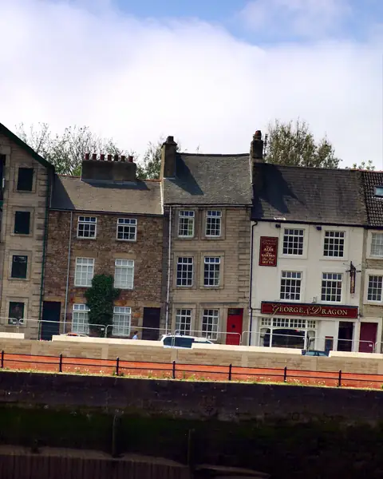 | Stone town houses by the river | selkovjr | CC BY 2.0 | Flickr |
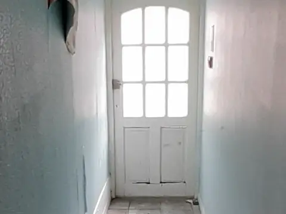 | Damp hallway with peeling paint | SouthendCC | CC0 1.0 | Flickr |
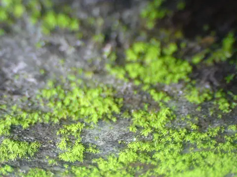 | Damp wall with green algae | hhkay | CC BY 2.0 | Flickr |
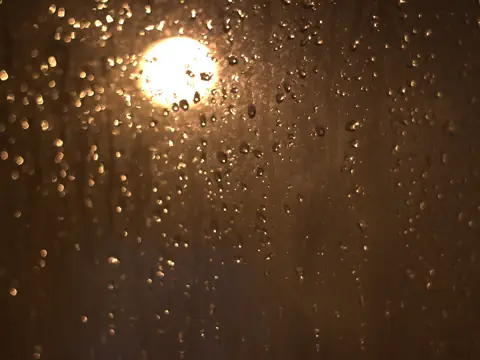 | Condensation on a window at night | Digital Sextant | CC BY 2.0 | Flickr |
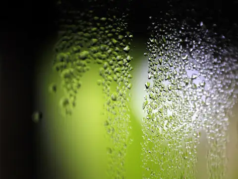 | Condensation droplets on glass | jenny downing | CC BY 2.0 | Flickr |
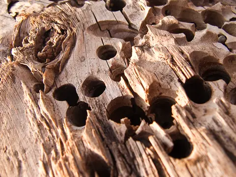 | Timber with woodworm holes | David Blaikie | CC BY 2.0 | Flickr |
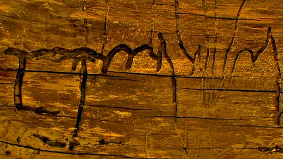 | Insect tunnels in a timber beam | Jan Tik | CC BY 2.0 | Flickr |
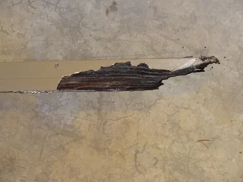 | Rotten timber | dave_mcmt | CC BY 2.0 | Flickr |
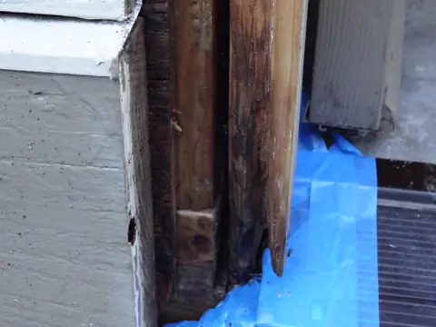 | Rot at the base of a door frame | dave_mcmt | CC BY 2.0 | Flickr |
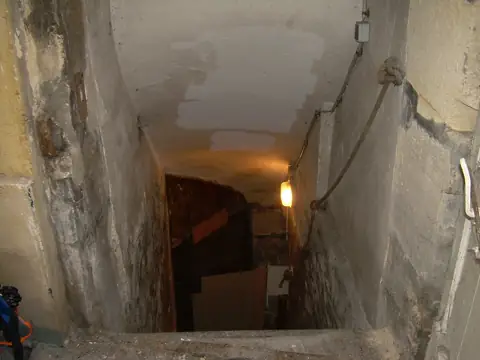 | Stone cellar stairs | Joanna Bourne | CC BY 2.0 | Flickr |
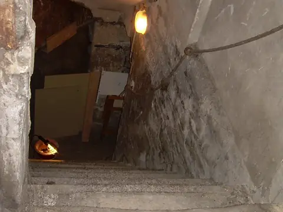 | Stone cellar stairs | Joanna Bourne | CC BY 2.0 | Flickr |
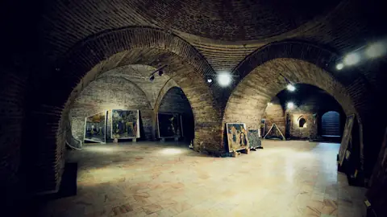 | A brick vaulted cellar | fusion-of-horizons | CC BY 2.0 | Flickr |
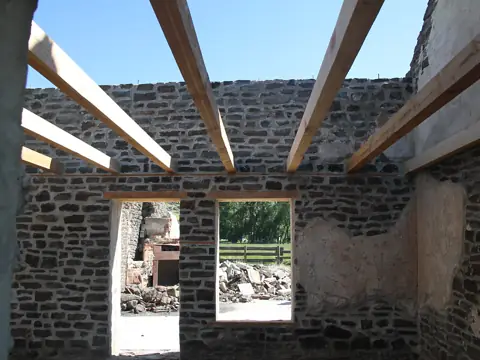 | Timber joists across stone walls | BLMIdaho | CC BY 2.0 | Flickr |
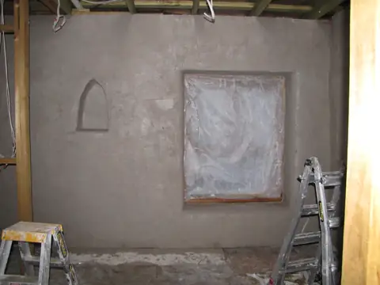 | A freshly plastered wall | Red Moon Sanctuary | CC BY 2.0 | Flickr |
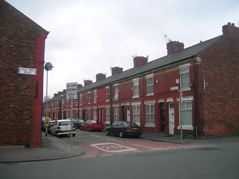 | A street of brick terraced houses | Gene Hunt | CC BY 2.0 | Flickr |
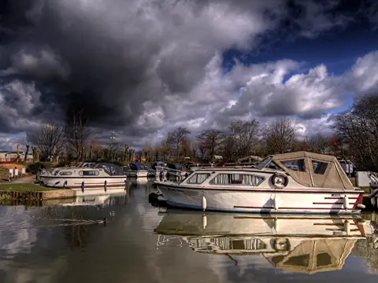 | Boats moored at a canal marina | Bay Photographic | CC BY 2.0 | Flickr |
| A river and bridges | The Boy from Bare | CC BY 2.0 | Flickr |
Photos are cropped and resized for this site. Titles above describe what each photo shows; they're not where it was taken.